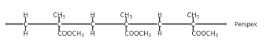
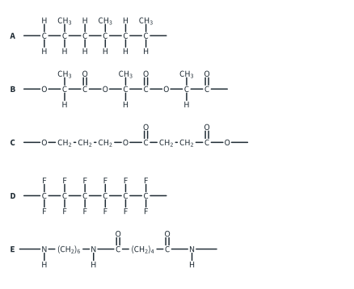
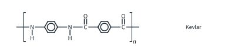

Polymers 1 Tutorial
Topic 11.10 · Polymers Tutorial 1
On this page
Ar: H 1.0, C 12.0, N 14.0, O 16.0, F 19.0, Cl 35.5 (Data Booklet). Bond energies are in the Data Booklet.
Question 1
- Explain the meaning of the terms monomer, polymer and repeat unit.
- A sample of poly(chloroethene) has an average relative molecular mass of 1.25 × 105. Calculate the average number of repeat units in a chain.
- Explain why the relative molecular mass of a polymer is always quoted as an average.
- Triacontane, C30H62, is a long-chain alkane. Is it a polymer by the 9476 definition? Explain.
Question 2
- Draw a section of poly(phenylethene) containing three repeat units, and draw the repeat unit.
- Write an equation for the addition polymerisation of tetrafluoroethene, showing the repeat unit.
- Explain why poly(propene) has the same empirical formula as propene.
- A polymer chain is made only of repeat units –CH(CH3)–CH(CH3)–. Give the structural formula and name of the monomer.
Question 3 (Further example)
Perspex is an addition polymer. A section of its chain is shown below.

- Draw the repeat unit of Perspex.
- Give the structural formula of the monomer, and name the two functional groups it contains.
- Another addition polymer has the repeat unit –CH2–CH(CN)–. Give the structural formula of its monomer.
Question 4
PET is made from ethane-1,2-diol and benzene-1,4-dicarboxylic acid.
- Draw the structures of the two monomers.
- Draw the repeat unit of PET and circle an ester link.
- Write an equation for the formation of PET from n molecules of each monomer.
- Calculate the Mr of the repeat unit. A sample of PET has an average Mr of 38 400. Calculate the average number of repeat units, and the number of ethane-1,2-diol residues, in a chain.
- Explain why PET is described as a condensation polymer.
Question 5
- Write equations for the formation of nylon-6,6 from hexane-1,6-diamine and (i) hexanedioic acid, (ii) hexanedioyl dichloride. Name the small molecule lost in each.
- Suggest why the reaction with hexanedioyl dichloride is fast at room temperature, while the reaction with hexanedioic acid needs heating.
- Explain the name “nylon-6,6”.
- Calculate the Mr of the repeat unit of nylon-6,6. A sample has an average Mr of 22 600. How many repeat units, and how many monomer residues, are in an average chain?
- (Further example) Draw sections of two neighbouring nylon-6,6 chains to show how they are held together. Use your diagram to explain why nylon fibres are stronger than poly(ethene) fibres.
Question 6
Sections of five polymer chains, A to E, are shown below.

For each polymer, state whether it is an addition or a condensation polymer, give the structural formula(e) of its monomer(s), name the link between the monomer residues, and name the small molecule (if any) lost when it forms.
Question 7 (Further example)
Kevlar, used in bullet-resistant vests, has the repeat unit shown below.

- Deduce the structures of two monomers from which Kevlar could be made at room temperature, and name the small molecule lost.
- Nylon-6 is made from a single monomer, 6-aminohexanoic acid, H2N(CH2)5COOH. Draw its repeat unit and calculate its Mr. Explain why one monomer is enough, and name another polymer in this topic made from a single monomer for the same reason.
Question 8
- What is meant by a 2-amino acid (α-amino acid)? Draw the structures of glycine (aminoethanoic acid) and alanine (2-aminopropanoic acid).
- Draw the two dipeptides that can be made from one molecule of glycine and one of alanine, and mark the peptide bond in each.
- How many different tripeptides can be made from glycine, alanine and serine (i) if each is used once, (ii) if each may be used any number of times?
- How many chiral centres does the tripeptide Gly-Ala-Ser have? Explain.
- Explain why proteins and nylon are both described as polyamides.
Question 9
The dipeptide Gly-Ala is H2NCH2CO–NHCH(CH3)COOH.
- Give the products, and write an equation, for the hydrolysis of Gly-Ala by dilute HCl(aq), heat under reflux.
- Give the products, and write an equation, for the hydrolysis of Gly-Ala by NaOH(aq), heat under reflux.
- State which bond is broken in the hydrolysis, and explain why the amino acids are obtained as cations in (a) and as anions in (b).
- (Further example) The alanine in Gly-Ala is L-alanine. Is the alanine obtained by hydrolysis still L-alanine? Explain.
Question 10
- Use bond energies from the Data Booklet, and the polarity of the bonds, to explain why poly(propene) is very hard to biodegrade.
- PLA (poly(lactic acid)) is described as compostable. Explain why it can biodegrade, and write an equation for the hydrolysis of its repeat unit, –[OCH(CH3)CO]–.
- PET and nylon-6,6 can both be hydrolysed, yet both persist in the environment for many years. Suggest reasons.
- Explain why PTFE is even more resistant to chemical attack than poly(ethene).
Question 11
- Plastics are made mainly from crude oil. Give two economic, two environmental and one social factor that affect whether plastic waste is recycled.
- Compare mechanical recycling and chemical recycling of PET. Explain why chemically recycled PET can be used again for food contact while mechanically recycled PET often cannot.
- In glycolysis, PET is heated with ethane-1,2-diol to give BHET, HOCH2CH2OOC–C6H4–COOCH2CH2OH. Write an equation for the reaction of one repeat unit of PET.
- Explain why a small amount of PVC mixed with PET waste is a problem (i) in mechanical recycling, (ii) if the waste is incinerated.
Question 12
Use the reaction map in Part 1. For each conversion, give the reagents and conditions for each step and the structure of each intermediate.
- ethanal → poly(lactic acid) (three steps)
- ethene → ethyl ethanoate, using ethene as the only organic starting material
- bromoethane → propylamine (propan-1-amine), CH3CH2CH2NH2 (two steps)
- benzene → N-phenylethanamide, CH3CONHC6H5 (three steps)